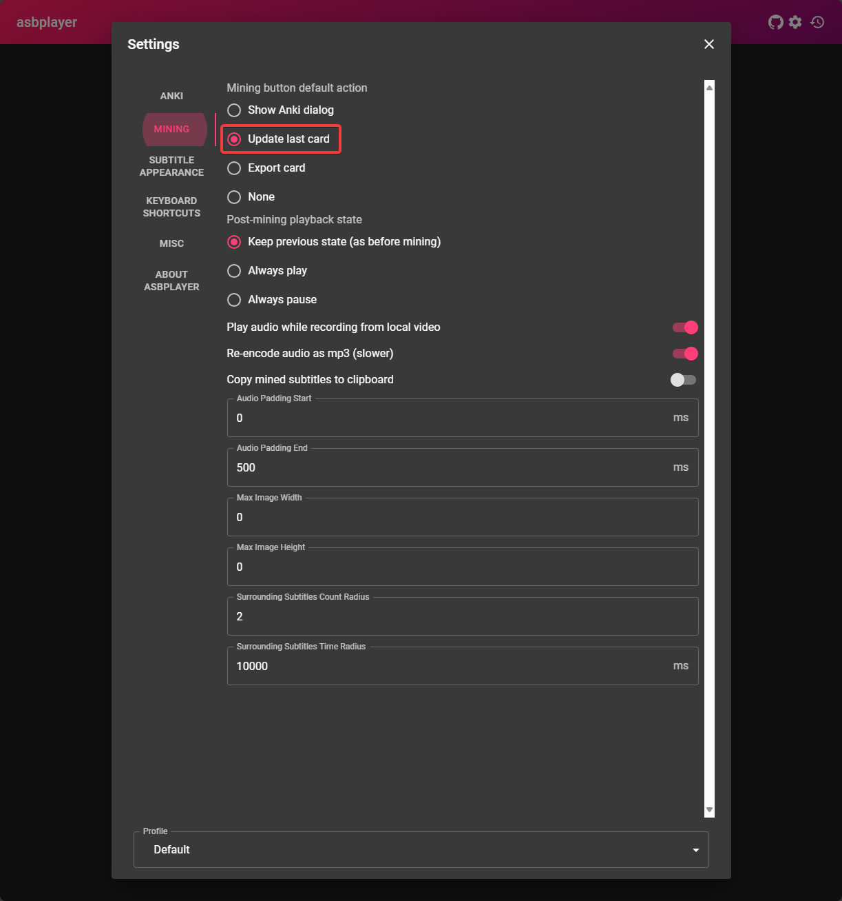

Setup Mining Anime di PC¶
Permulaan¶
asbplayeradalah pemutar video di browser yang bisa digunakan untuk menontonanimedansubtitle, lalu hover kata menggunakanyomitan.
Unduh & Pasang¶
-
Unduh
animedansubtitle JPkamu- Untuk subtitle JP, bisa ke Jimaku
-
(Opsional) Untuk video streaming, pasang ekstensi asbplayer
Untuk Pengguna Firefox
Untuk pengguna Firefox, bisa instal dari sini, tapi banyak fitur yang hilang, lihat catatan ini.
Syarat:
- Sudah pasang Yomitan di PC
Langkah-langkah¶
-
Di browser buka
chrome://flagsatauedge://flags- Cari
Experimental Web Platform featureslalu aktifkan

- Cari
-
Buka asbplayer
- Terima
request permissionkeAnkidan pasang Ekstensinya.
- Terima
-
Di bagian atas kanan halaman pengaturan (ikon gir); salin pengaturan di bawah

-
Buka
AnimedanSubtitlediasbplayerdengan klik tombolbrowse- Abaikan cara ini untuk situs streaming seperti
YoutubeatauNetflix


- Abaikan cara ini untuk situs streaming seperti
-
Untuk mining:
- Arahkan kursor ke kata di subtitle dan mining dengan
Yomitan - Tekan CtrlShift + U untuk otomatis menambahkan
screenshotdanaudiokeAnki - (Opsional) Untuk mengganti shortcut:
Settings>Keyboard Shortcuts>Update last-created Anki card
- Arahkan kursor ke kata di subtitle dan mining dengan
-
Sekarang kamu bisa Mining dengan
asbplayerdanyomitan!- lihat Demo Mining Anime
Kamu sudah bisa mining anime di PC. Mau lanjut cek panduan Setup Mining Light Novel?
Lanjut ke Setup Mining Light Novel di PC
Kalau ada masalah, cek Pertanyaan Umum
Info Tambahan & Tips¶
Info 1: Demo Mining Anime¶
Demo Mining Anime (klik untuk lihat)
di tutorial ini aku pakai note type Mining-JP, di bagian pengaturan anki di yomitan kamu serharusnya sudah menggunakan note type Lapis. Aku pakai shortcut CtrlShift + X agar bisa mengedit audio/screenshot/subtitle yang akan dikirim ke Anki
Tip 1: Sinkronisasi Subtitle¶
Sinkronisasi Subtitle (klik untuk lihat)
Terkadang subtitle tidak sinkron karena beda sumber anime, untuk menyesuaikan:
- +100ms = CtrlShift + ←
- -100ms = CtrlShift + →
Tip 2: Lewatkan Rekaman Audio saat Mining¶
Lewatkan Rekaman Audio saat Mining (klik untuk lihat)
- Bisa lewati rekaman audio biar lebih cepat
- Kalau kartu Anki kamu dibuat <5 detik, audio rekaman bisa jadi hampir tidak terdengar
Tip 3: ASBPlayer di Youtube, Netflix, dan Web lain¶
ASBPlayer bisa digunakan di Youtube, Netflix, dll (klik untuk lihat)
- Kamu hanya perlu buka video yang ingin diputar, tekan shortcut
` (tanda petik tunggal, di samping angka 1), lalu klikLoad Subtitles - Kamu bisa mengaktifkan hingga 3 subtitle secara langsung dari subtitle yang disediakan webnya atau impor file .SRT
- Untuk kompatibilitas di web lain, kamu bisa cek ini
Pertanyaan Umum¶
Pertanyaan 1: Kenapa harus aktifkan Experimental Web Platform?¶
Kenapa aktifkan fitur eksperimen? (klik untuk lihat)
- Beberapa anime punya banyak
audio, kayakjpdanen, jadi kita bisa pilihjpkalau bukan default-nya
Pertanyaan 2: Aku ada eror, bisa cek di mana?¶
Aku ada eror tertentu saat mencoba menambang di ASBplayer (klik untuk lihat)
- Kamu bisa cek Common Issue di ASBplayer. Kalau masalahmu tidak ada di sana, kita diskusikan di server